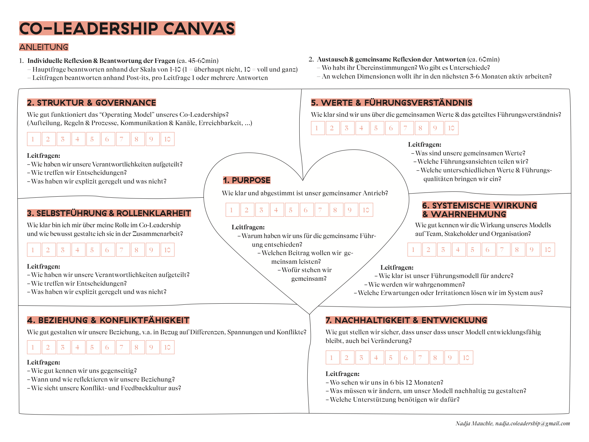
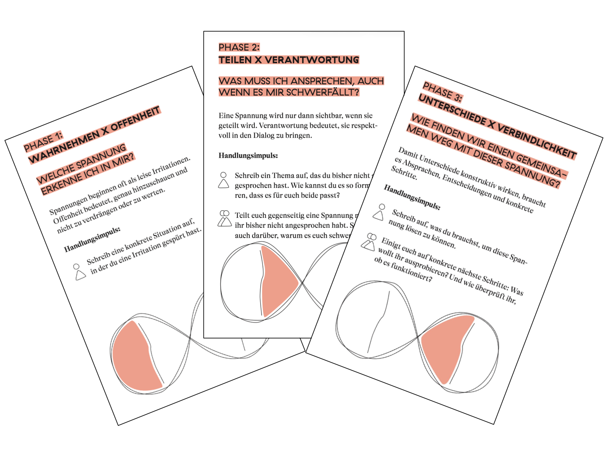
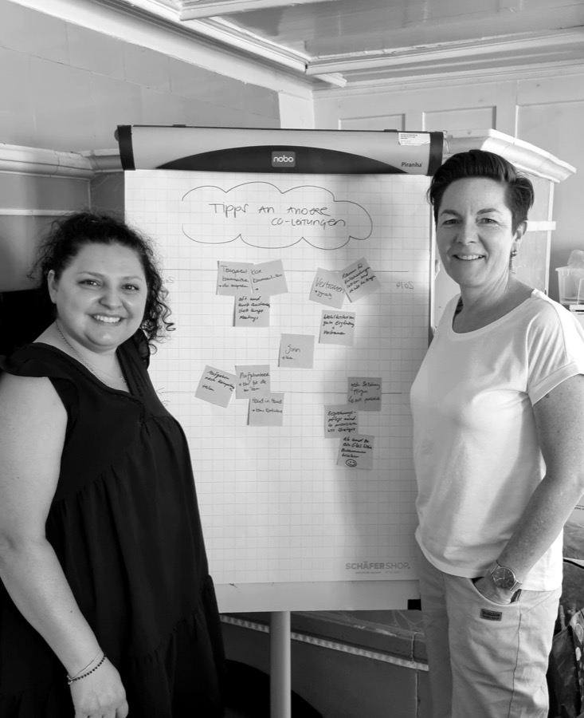
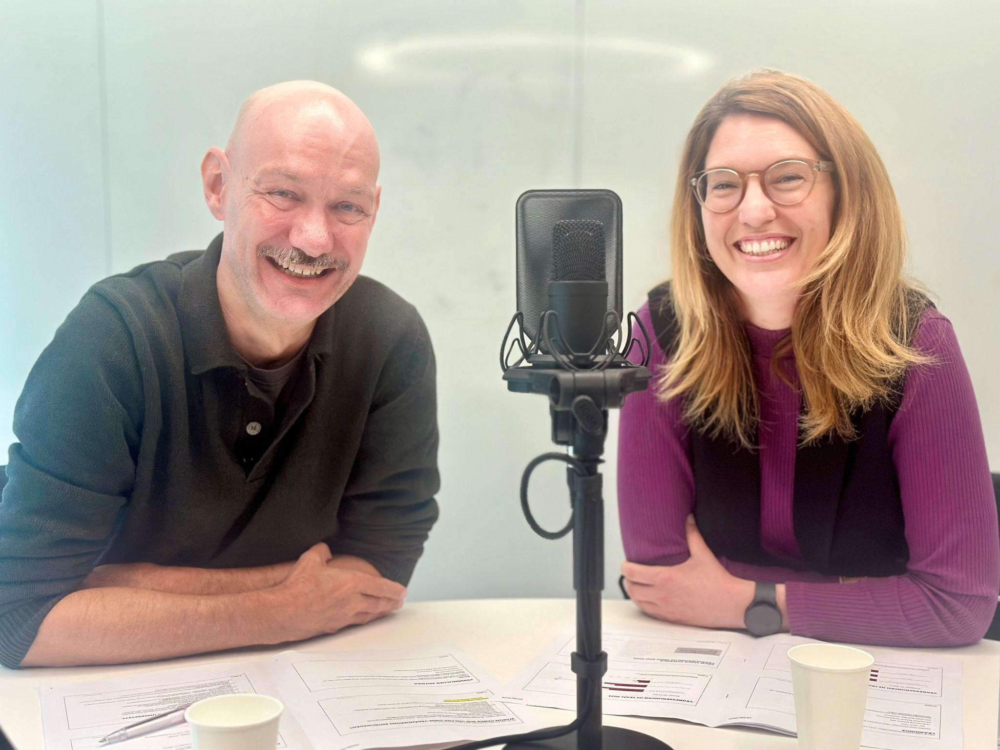

Ich führe selbst seit vielen Jahren, heute in der Geschäftsleitung der Stiftung Biovision, davor unter anderem als Co-Director Marketing & Communication bei Canon Schweiz. Ich begleite dich, wenn du vor einer schwierigen Entscheidung stehst, deine Führungsrolle teilst oder in eine neue Rolle hineinwächst.
Über mich
Ich kenne beide Seiten: Allein an der Spitze und in geteilter Führung. Bei Canon habe ich als Co-Director Marketing & Communication erlebt, wie viel Kraft eine geteilte Rolle freisetzt und wo sie auch herausfordern kann. Daraus ist meine MAS-Arbeit an der ZHdK entstanden und später co:labor. Heute bringe ich diese Erfahrung in Sparrings mit Führungskräften ein: Direkt, praxisnah und mit dem Blick von jemandem, der selbst Entscheidungen verantwortet.
Stiftung Biovision
Leiterin Kommunikation & Fundraising, GL
Führung von 3 Teams, Budgetverantwortung Fundraising CHF 10 Mio.
Co-Gründerin & Co-Moderation, co:labor
Selbstständig
Canon Schweiz AG
Verschiedene (Führungs-)Positionen, zuletzt Co-Director Marketing & Communication (GL)
Führung von 23 Mitarbeitenden
MAS Strategic Design
ZHdK Zürcher Hochschule der Künste
CAS Unternehmensentwicklung
ZHAW School of Management and Law
CAS Change Management
HWZ/SGO
Master Kommunikation und BWL
UZH Universität Zürich
Angebot
Zwei Formate, je nachdem, was du gerade brauchst: Ein Sparring nur für dich oder ein Kreis von Co-Leader:innen, die deine Situation aus eigener Erfahrung kennen.
Wer entscheidet was? Wer bekommt die Anerkennung? Wie geht ihr damit um, wenn ihr euch uneinig seid? Im co:labor besprichst du solche Fragen mit anderen Co-Leader:innen, die genau das kennen. Begleitet von Anna Schreier und mir.
«Co-Leadership lernt man nicht aus dem Lehrbuch. Im co:labor höre ich, wie andere dieselben Situationen gelöst haben, und nehme jedes Mal etwas für meinen Co-Leadership-Alltag mit.»
Georgia, Co-Leaderin
Mehr erfahrenFür Führungskräfte und Co-Leader:innen, die vor einer Entscheidung stehen, die sie nicht mit ihrem Team besprechen können, in eine neue Rolle hineinwachsen oder ihren Führungsstil schärfen wollen. Im Einzelsparring arbeiten wir an deiner konkreten Situation und entwickeln umsetzbare nächste Schritte.
«Nadja hat mir in verschiedenen Leadership-Themen sehr geholfen, schwierige Situationen klarer zu sehen und mit mehr Ruhe zu entscheiden. Ihr Sparring ist präzise, ehrlich und zugleich wertschätzend, gerade bei Rollen, Kommunikation und anspruchsvollen Entscheidungsfragen.»
Patrik, CTO
Mehr erfahrenArbeiten
Vier Werkzeuge aus meinem MAS Strategic Design an der ZHdK, drei davon zu Co-Leadership. Kostenlos, für deinen Führungsalltag.
Spannungen im
Co-Leadership
erkennen & nutzen
Co-Leadership hat grosses Potenzial, doch in der Praxis entstehen oft Spannungen. Diese Arbeit zeigt, wie Co-Leader:innen sie erkennen, ansprechen und für eine wirksame gemeinsame Führung nutzen können.
PDF ansehen →
Eine Standortbestimmung für euer Co-Leadership auf einer Seite: Wo funktioniert ihr gut, wo reibt es?
PDF ansehen →
Ein Kartenset für die bewusste Spannungsarbeit im Co-Leadership-Alltag, das hilft, Spannungen im Gespräch sichtbar zu machen und gemeinsam anzugehen.
PDF ansehen →Flower Power:
Leadership durch
die Blume
Ein Gruppen-Essay darüber, wie Führungspersonen durch Ermutigung und Vertrauen die Umgebung gestalten, in der Mitarbeitende aufblühen und Verantwortung übernehmen können.
Mehr dazu →

Workshop- und Podcast-Momente aus der Praxis von Co-Leadership.
Medien
Wie Co-Leadership in der Praxis funktioniert und wo es hakt: Gespräche und Beiträge mit mir.
Ralph Schmid und ich erzählen, wie wir Verantwortung, Entscheidungen und Zusammenarbeit in unserer Co-Leitung bei Canon gestaltet haben.
Podcast hören →Was passiert, wenn Führung nicht nur eine Rolle ist, sondern ein gemeinsames Modell im Alltag?
Podcast hören →Über Vertrauen, Rollenklärung und Zusammenarbeit in geteilten Führungsmodellen.
Video ansehen →Warum eine gelingende Zusammenarbeit mehr braucht als gute Absichten und klare Strukturen.
Artikel lesen →